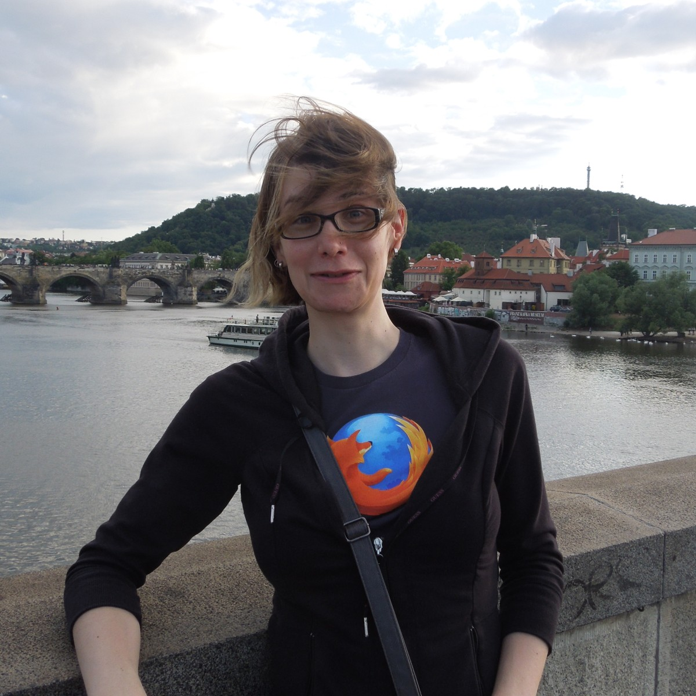

This week I am in Prague, at the European Conference on Object Oriented Programming (ECOOP) to present my research on Basic Block Versioning. Getting to ECOOP was fairly stressful. I was flying overnight but can never manage to sleep on airplanes. Sleep-deprived, I had to run like mad in an attempt to make an impossible connection in Paris. The Charles de Gaulle airport is organized in a way that I had to wait for two shuttle buses and go through security twice. Fortunately, the Paris-Prague flight was slightly delayed, and I barely made the connection, but my checked luggage did not.
I presented my paper Wednesday afternoon. The talk went very smoothly and the audience questions were rather friendly. The paper is now available online from the publisher if you're interested in reading it. I was very happy to see that my talk and all others were filmed. The video is not yet available, but I have uploaded the slides. In addition to giving a talk, I also presented a poster explaining the main aspects of my paper. I was pleasantly surprised when they informed me that I had won the distinguished poster award.
There are many interesting people here, including VM engineers from Mozilla and Google, Brendan Eich and Bjarne Stroustrup. I had the privilege of visiting touristic sites, sharing a meal and discussing VM design with Carl Friedrich Bolz (of PyPy fame) and Sam Tobin-Hochstadt. My main regret is that I've had a very difficult time adapting to the local time zone. I'm sleeping poorly at night and crashing every afternoon. This has resulted in me missing many interesting talks. I'm looking forward to the recorded videos being uploaded. The VM and language design talks from Curry On are of particular interest to me.